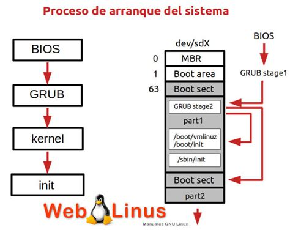
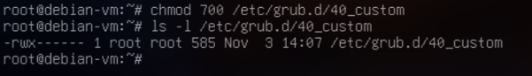
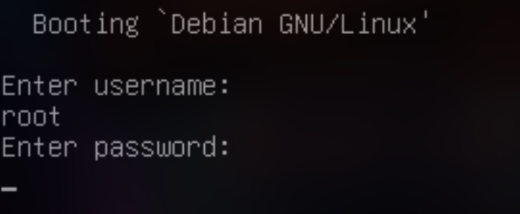
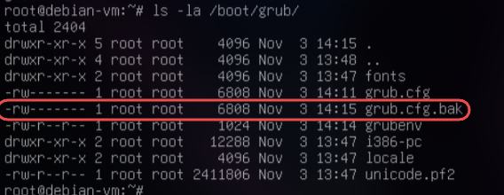
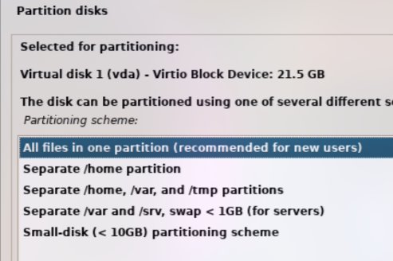
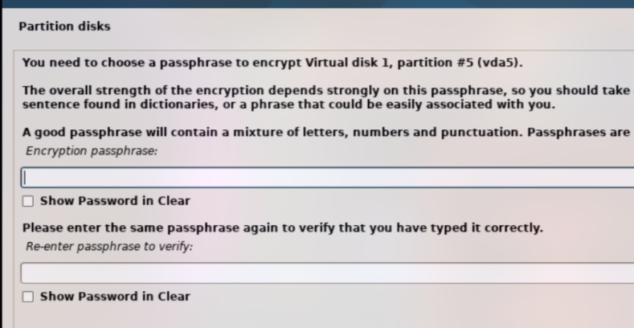

En esta guía aprenderás a proteger el arranque de un sistema Debian para impedir que un actor malicioso pueda modificarlo y acceder al sistema sin autorización.
Se cubrirán los siguientes puntos:
- Ocultación del menú de arranque.
- Configuración de contraseña en GRUB2.
- Copias de seguridad de la configuración del arranque.
- Otras medidas de seguridad opcionales.

- Abrir el archivo de configuración principal de GRUB:
sudo nano /etc/default/grub
- Modificar los siguientes parámetros:
GRUB_TIMEOUT=0 # Reduce el tiempo de espera a 0 segundos
GRUB_HIDDEN_TIMEOUT=0 # Oculta el menú
- Guardar los cambios y regenerar la configuración de GRUB:

sudo update-grub

Esto asegura que los usuarios no vean el menú de arranque y evita intentos de manipulación del kernel o selección de otros sistemas operativos.
- Crear una contraseña cifrada para GRUB2:
sudo grub-mkpasswd-pbkdf2
- Introduce la contraseña deseada.
- Copia la salida que empieza con
pbkdf2.
- Editar el archivo
/etc/grub.d/40_custom:
sudo nano /etc/grub.d/40_custom
- Agregar las siguientes líneas al final del archivo (reemplaza
HASH_GENERADOpor tu valor generado):
set superusers="root"
password_pbkdf2 root HASH_GENERADO

- Cambiar permisos para proteger el archivo:
sudo chmod 700 /etc/grub.d/40_custom

- Regenerar la configuración de GRUB:
sudo update-grub

Ahora, cualquier modificación del menú de arranque o entrada de kernel requerirá la contraseña configurada.

Es importante mantener una copia de seguridad de los archivos de configuración por si se realizan cambios erróneos.
sudo cp /boot/grub/grub.cfg /boot/grub/grub.cfg.bak
sudo cp -r /etc/grub.d /etc/grub.d.bak
sudo cp /etc/default/grub /etc/default/grub.bak
Estas copias permiten restaurar la configuración original si algo sale mal durante la configuración.

Para proteger completamente los datos en caso de acceso físico no autorizado, se recomienda instalar Debian usando LVM con cifrado completo de disco.
Pasos de instalación:
- Arranca desde el medio de instalación de Debian.
- Selecciona el idioma y la configuración de red.
- En la sección de particionado, elige:
- "Guiado - usar disco entero y configurar LVM con cifrado"

- Selecciona el disco que deseas cifrar y sus particiones. 
- Marca la opción "Cifrar la partición de volumen lógico con contraseña".
- Ingresa una contraseña fuerte para el cifrado de disco.

- Finaliza la instalación y reinicia.

Al iniciar el sistema, se te solicitará la contraseña del cifrado antes de que GRUB arranque el sistema operativo.
![
- GRUB protegido con contraseña y oculto mejora significativamente la seguridad del arranque.
- Copias de seguridad y permisos correctos evitan pérdidas por errores de configuración.
- Combinado con cifrado de disco y controles de BIOS/UEFI se obtiene un arranque robusto frente a accesos no autorizados.
Imagen sugerida: Infografía con todas las medidas de seguridad aplicadas en Debian.
Proyecto 1 – Parte 2: Bastionado del arranque de Debian
En esta guía aprenderás a proteger el arranque de un sistema Debian para impedir que un actor malicioso pueda modificarlo y acceder al sistema sin autorización.
Se cubrirán los siguientes puntos:
- Ocultación del menú de arranque.
- Configuración de contraseña en GRUB2.
- Copias de seguridad de la configuración del arranque.
- Instalación de Debian con cifrado de disco completo LVM.
Imagen sugerida: Diagrama del flujo de arranque de Debian/GRUB2.
- Abrir el archivo de configuración principal de GRUB:
sudo nano /etc/default/grub
- Modificar los siguientes parámetros:
GRUB_TIMEOUT=0 # Reduce el tiempo de espera a 0 segundos
GRUB_HIDDEN_TIMEOUT=0 # Oculta el menú
- Guardar los cambios y regenerar la configuración de GRUB:
sudo update-grub
Esto asegura que los usuarios no vean el menú de arranque y evita intentos de manipulación del kernel o selección de otros sistemas operativos.
Imagen sugerida: Captura de /etc/default/grub mostrando los cambios.
- Crear una contraseña cifrada para GRUB2:
sudo grub-mkpasswd-pbkdf2
- Introduce la contraseña deseada.
- Copia la salida que empieza con
pbkdf2.
- Editar el archivo
/etc/grub.d/40_custom:
sudo nano /etc/grub.d/40_custom
- Agregar las siguientes líneas al final del archivo (reemplaza
HASH_GENERADOpor tu valor generado):
set superusers="root"
password_pbkdf2 root HASH_GENERADO
- Cambiar permisos para proteger el archivo:
sudo chmod 700 /etc/grub.d/40_custom
- Regenerar la configuración de GRUB:
sudo update-grub
Ahora, cualquier modificación del menú de arranque o entrada de kernel requerirá la contraseña configurada.
Imagen sugerida: Ejemplo de configuración de contraseña en 40_custom.
Es importante mantener una copia de seguridad de los archivos de configuración por si se realizan cambios erróneos.
sudo cp /boot/grub/grub.cfg /boot/grub/grub.cfg.bak
sudo cp -r /etc/grub.d /etc/grub.d.bak
sudo cp /etc/default/grub /etc/default/grub.bak
Estas copias permiten restaurar la configuración original si algo sale mal durante la configuración.
Imagen sugerida: Carpeta /boot/grub/ mostrando copia de seguridad.
- GRUB protegido con contraseña y oculto mejora significativamente la seguridad del arranque.
- Copias de seguridad y permisos correctos evitan pérdidas por errores de configuración.
- La instalación con cifrado LVM protege todos los datos incluso si el disco es extraído.
- Combinado con controles de BIOS/UEFI se obtiene un arranque robusto frente a accesos no autorizados.
Imagen sugerida: Infografía mostrando GRUB seguro + cifrado LVM + copias de seguridad.